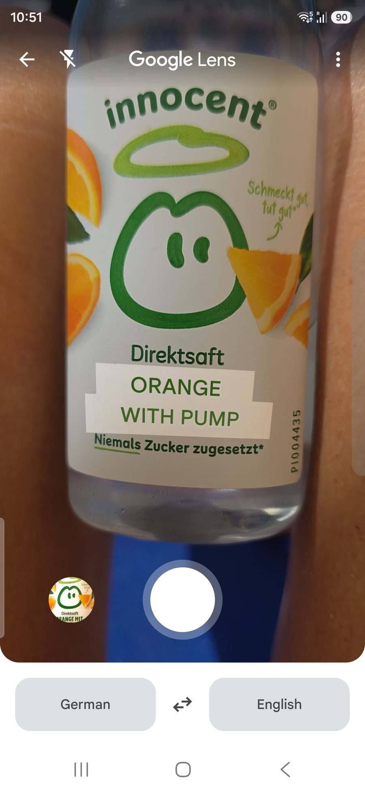

Orange With Pump: A Field Guide to Machine Translation Going Sideways
I was handed a bottle of German orange juice and asked to translate it.
This should be the easiest job in the world. It is a juice bottle. It has perhaps eleven words on it. I have a phone, the phone has a camera, the camera has a little translate button, and the little translate button has the combined linguistic might of roughly the entire internet behind it. We have spent twenty years and an unknowable quantity of electricity teaching machines to do exactly this.
The phone considered the bottle, thought about it for a moment, and confidently informed me that I was holding:
Orange With Pump.
I checked the fridge. No pump was supplied.

What the bottle actually says
Let us do this properly first, because the bottle is, in fairness, perfectly clear if you read it like a human:
| On the bottle (German) | What it means |
|---|---|
| innocent | The brand name. It is a British company. The name is already in English. Nobody translated anything here, and that is the first joke. |
| Schmeckt gut, tut gut | "Tastes good, does good." Their slogan. Genuinely sweet. |
| Direktsaft | "Direct juice", i.e. not-from-concentrate. Pressed, bottled, never reconstituted from a syrup. |
| Orange mit Fruchtfleisch | Fruchtfleisch is literally "fruit flesh", and the standard English is "with pulp." A British supermarket says the same thing in its own shelf-speak: "with bits." Pulp, or bits. Not pump. |
| Niemals Zucker zugesetzt | "Never any sugar added." |
So the correct, boring, human translation of the headline is orange juice with pulp. That is the punchline of the whole exercise. The right English answer is a word so ordinary it is printed on a thousand cartons. The German label said Fruchtfleisch, the standard English is pulp, and the machine, asked to get from one to the other, produced pump.
Where the pump came from
Look at what actually happened, because it is sharper than "the machine doesn't speak German."
| Correct | What the machine produced |
|---|---|
| p u l p | p u m p |
Pulp and pump are one letter apart. A single l became an m, and the machine shipped the result without a flicker of doubt. This is not a model that had no idea; it is a model that got within one character of the answer and still handed me plumbing, confidently, because nothing in its world told it the result was absurd.
That is the failure worth dwelling on. The machine did not fail because it is stupid. It failed because it was confident and contextless. A human who knows what juice is would auto-correct pump back to pulp without even noticing the slip, because the world forbids a pump in a juice bottle. The machine had no such world to check against. A one-letter error that any grounded reader would catch on sight sailed straight through, because to the machine "pump" and "pulp" are just two nearby strings, and it had no reason to prefer the one that makes sense in a fridge.
A German shopper has never once been confused about this. Neither has a British one standing in front of the same fridge. They have context, but more than context, they have a culture the machine was never given. They know what an innocent bottle is. They know the juice aisle has bits and the hardware aisle has pumps, and that these are different shops. They disambiguate before they have finished reading, because the disambiguation was never really in the words. It was in the world the words came from.
A machine is grounded in a culture, just not yours
This is the real point, and it is bigger than one bottle.
A model is not grounded in nothing. It is grounded in a culture: the one it was trained on. And as I argued in The Crawl Still Speaks English, that culture is overwhelmingly the English-language web. The Common Crawl that sits under nearly every model is still around 41 percent English, with no other single language above 6 percent, and that number has barely moved in two years. The model does not approach German neutrally. It approaches German through English, translates the prompt into an English frame to reason about it, and translates back. Its defaults, its sense of what a word "probably" means, are English defaults.
So when it meets Orange mit Fruchtfleisch, it is not consulting a German juice aisle it has lived in. It is working in a vast, mostly-English statistical memory where pump and pulp sit side by side as plausible strings, with nothing to break the tie. A reader grounded in the world breaks that tie instantly: one of those words belongs in a fridge and one does not. The machine has no fridge. Its grounding runs out exactly where the German-and-British grounding would have started, and so the one-letter slip goes uncaught.
It is the same failure as the model that happily knew Wiener Schnitzel, because the English-language web is full of it, but stalled on Erdäpfelsalat until someone explained it was just potato salad under an Austrian name. The model's knowledge ran out precisely where the English sources did. Pump is Erdäpfelsalat with a sense of humour.
From a joke to a cost: the Vietnamese case
The juice bottle is funny because the stakes are a missing word for pulp. Move the same reflex to a language that carries meaning in marks the plumbing likes to throw away, and the joke becomes a cost.
Vietnamese is the clearest case, and I wrote it up on its own in Strip the Marks, Lose the Word. Take the single syllable ma. The mark on the vowel is not decoration; it is the word:
- ma – ghost
- má – mother
- mà – but
- mả – tomb
- mã – horse, or code
- mạ – rice seedling
Strip the marks somewhere in the plumbing, a URL slug, a filename, an old database that folds everything to ASCII, and a system built around English assumptions does not hand the model a slightly degraded word. It hands it a hole, and lets the model fill the hole with whatever its English-grounded culture finds most probable. Same machine, same reflex as the juice bottle, but now the choice is between a mother and a grave. The model will pick one, confidently, and move on.
That is why this matters past the laugh. A machine grounded in someone else's culture does not announce when its grounding has run out. It produces fluent, assured output either way. Orange With Pump is obviously wrong, so we catch it. The Vietnamese case is just as wrong and reads perfectly, so we do not.
The fix is to hand the machine the culture, not hope it has it
The fix is not "use a better model", though better models help. Better models are still grounded in the same crawl. The fix is to stop shipping context-free text and hoping the machine shares your world. Declare what the thing is. State the language and the locale. Mark up what a word refers to: that Fruchtfleisch here is the thing a British shelf calls "bits", that this is a juice and not a hardware store. Keep the fully-marked form as the record, never the ASCII fallback. You are not decorating the text; you are supplying the grounding the model did not get from its training, in a place it reads first.
That is the whole of Machine Experience in one sentence: the machine is going to read in its own culture whatever you give it, so give it the meaning explicitly rather than leaving it to guess. The brands, and the languages, that do this are the ones whose words still mean something after a phone camera, a crawler, or a translation layer has had its way with them. It is also a rule someone has to own and keep, which is the work The Gathering exists to do: community-led, never vendor-driven, because a rule that decides whose words survive a pipeline cannot belong to whoever profits most from the answer.
Tastes good, does good
Until then, I will be in the kitchen, enjoying my Orange With Pump. It tastes good. It does good. It does not, as far as I can tell, pump anything.
With apologies to innocent, who got it right in two languages before the machine got it wrong in a third.
Related reading
- The Crawl Still Speaks English – why the model guesses in English, and what a non-English publisher can do about it
- Strip the Marks, Lose the Word – diacritics and tone marks as data, where the same reflex deletes whole words
- The Tokenization Trap – how a model breaks a German word into pieces before it can read it
- What Is Machine Experience? – the discipline behind this post
- The Gathering – the open standards body where MX rules like this one are written and owned
Tom Cranstoun is the founder of the Machine Experience (MX) community and author of the MX book series. He consults on MX strategy through Digital Domain Technologies Ltd.